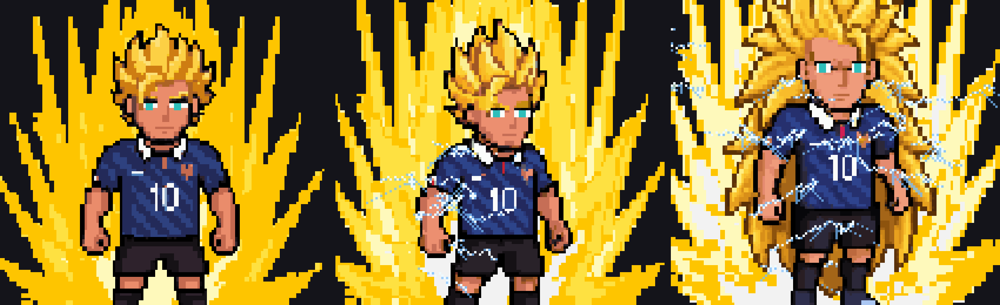
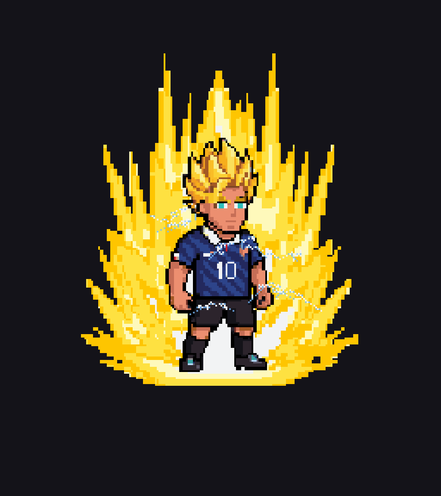
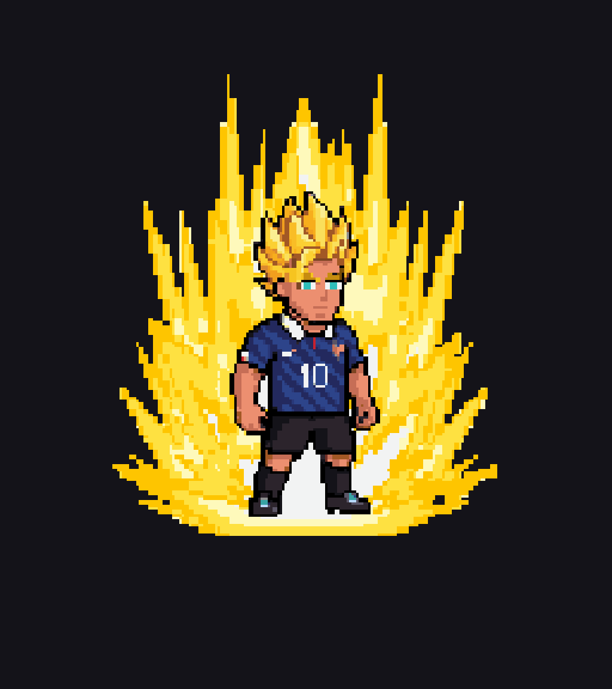
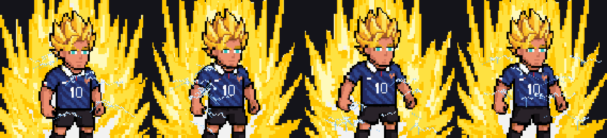
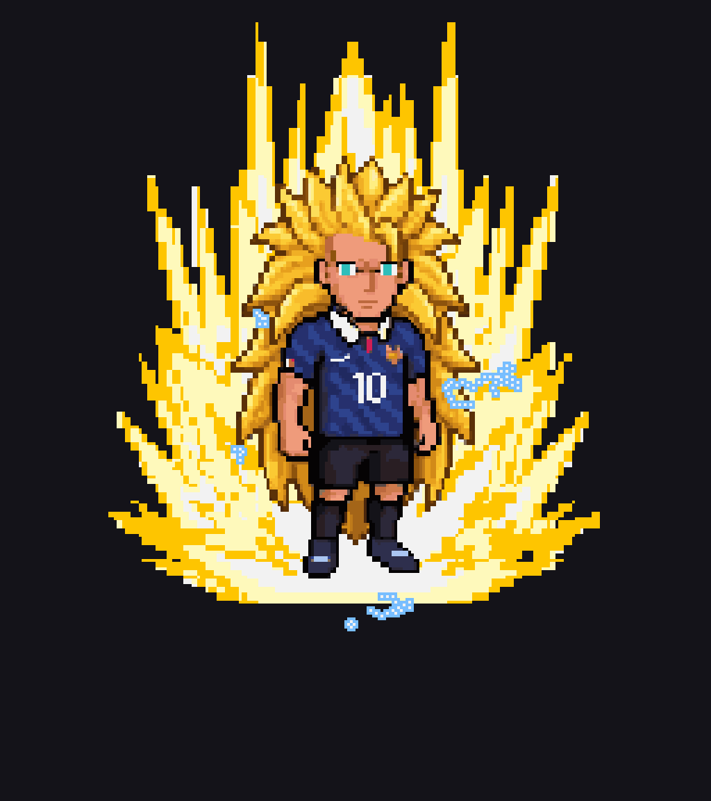
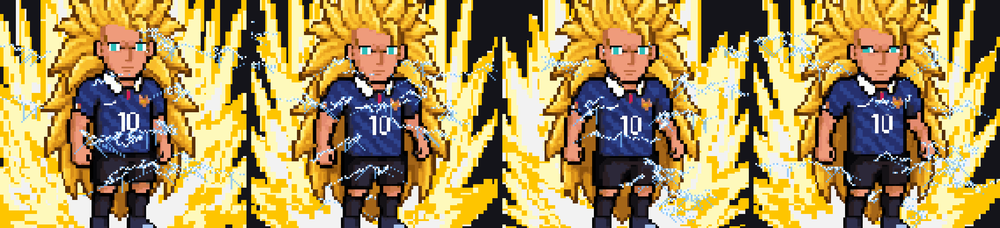
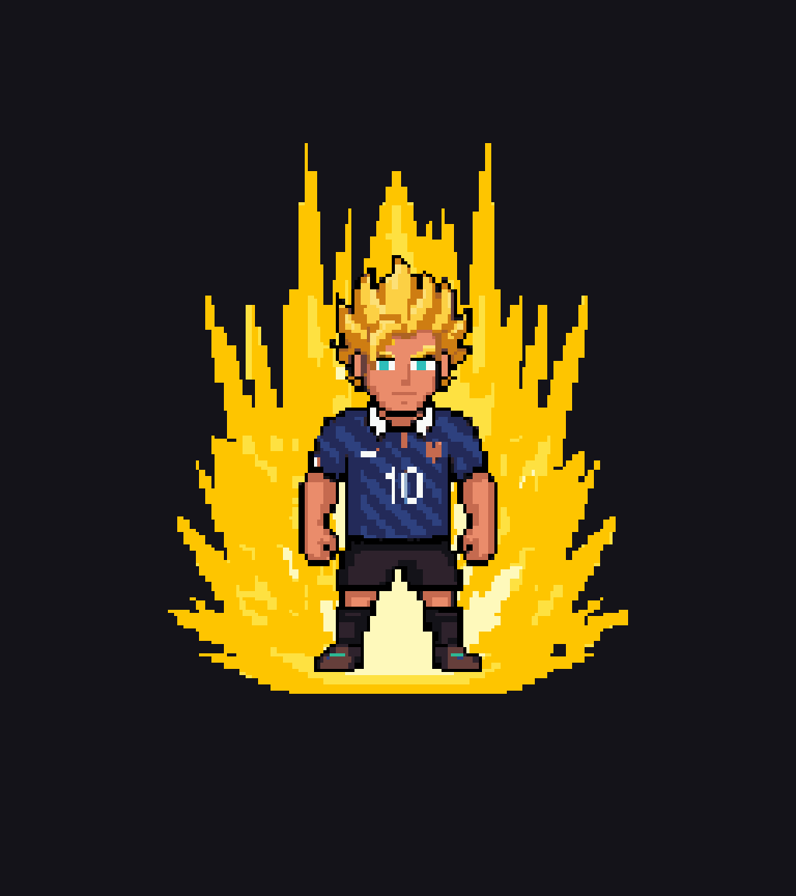
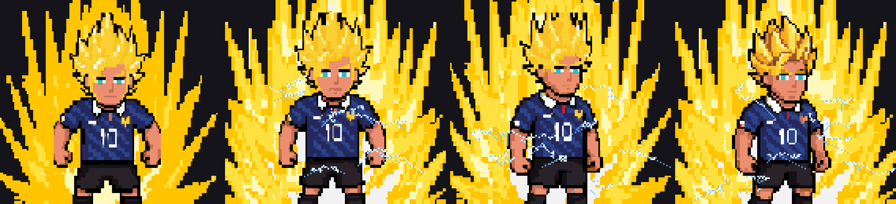
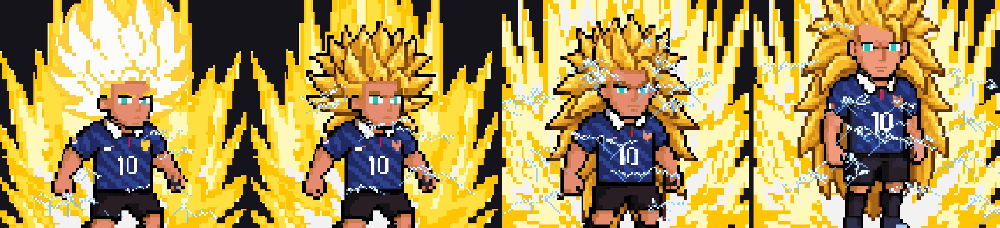

Commit e355692
SSJ1 has no lightning. SSJ2 is clearly electrified. SSJ3 is roughly two and a half times more intense again.
SSJ1 · SSJ2 · SSJ3 — same crop, same scale

Strong lightning



Strongest lightning


Arcs begin as he becomes SSJ2


Arcs step up to SSJ3 strength
